The Forehand Followthrough: Extension and Rotation¶
John Yandell¶
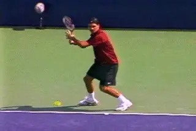
The modern forehand: complexity and misunderstanding.
The pro forehand in modern tennis is one the most complex biomechanical motion in sports. It's also one of the most misunderstood.
In some ways the development of video data bases of the strokes of top players has actually increased this confusion. There is a long standing tendency in coaching to speak about the forehand as if there was only one variation. Now with the video resources available, it's possible to pick one example and hold that up as the norm.
This tendency to over simplify the forehand is most pronounced when it comes to the followthrough. It leads to statements such as these: "Roger Federer finishes his forehand low and across his body." "Rafael Nadal finishes with his racket over his head." "Maria Sharapova finishes with her hand on her left side."
And yes, you can see those players, and virtually all pro players, making all those finishes at different times, and others as well. What the video data bases really show is the incredible complexity and variety of the forward swings. The followthrough is an extremely dynamic combination of elements, and we need to understand how it varies depending on how these elements are combined.
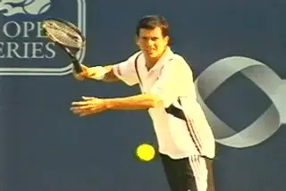
The phenomenal grip range: eastern to western and everything in between.
Why is the forehand so complex? For starters, the grips. As I outlined in the grip articles (link) there are a minimum of 6 distinct forehand grips now used on the pro tour. Ponder that for a second. Six different ways to create the basic connection between the hand and the racket.
Compare that to golf or baseball, where there is minimal variation in how players hold the club or the bat. Is there anything like the difference between a continental and a western grip in either of those sports? (No.)
But grip is only one factor. In golf the player is standing still. The ball is also still and in virtually the same place relative to the player for every swing. In baseball, the ball is moving with different speeds and spins, but it's still confined within a relatively small area, the strike zone. The batter may take one step or stride, but the swing still begins from a stationary position.
[Compare that to tennis where virtually every ball requires movement on the player's part. Players can move to the ball, set up, and have their feet quite still in a square stance. They can hit from a range of open stances, or they can hit on a dead sprint--and every possible combination in between.]
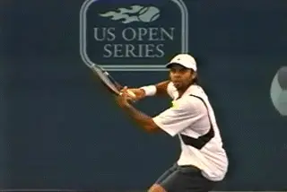
Were any two forehands ever hit exactly alike?
There is one other huge factor. The location of the ball players are trying to hit. The ball can bounce anywhere within a rectangle that's 27 feet wide across the baseline and 39 feet long on your side of the net. The contact height can be anywhere from a few inches off the court surface to 6 feet in the air, or higher. Furthermore, no two tennis balls were probably ever hit with the exact same combination of speed and type and amount of spin.
And that's just the incoming ball. Now we have to consider all the same factors for the shot the player decides to hit back to his opponent on the other side. What speed, depth, angle, spin and trajectory does the opponent chose in response?
These fundamental differences in grips, movement, ball flight, and shot selection are at the root of a lot of confusion about how top players hit their forehands. Given the almost infinite possible combinations of all these factors, it's no wonder that we see so much variety in the shapes of the forehand swing. (For more on the types of shots top players hit check out Brett Hobden's great article on link.)
Don't get me wrong, there are definite commonalities across the grip styles and the various shots players hit. These generally have to do with preparation, the hitting arm positions, and to some extent, the backswings. The variations are primarily in the forward swings and the followthroughs.
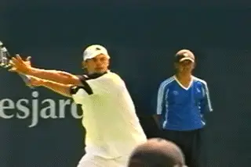
Extension and Rotation: two independent factors mixed in the modern followthrough.
So to really understand what is going on with the forehand across the grip styles in the modern game, we have to understand this range of followthroughs and how players produce them, and especially, why.
In this article we'll take a look at two of the primary factors that determine these shapes. These factors are Extension and Hand and Arm Rotation. By Extension I mean the shape and length of the swing as the racket travels forward and upward. Rotation describes the "windshield wiper" effect. This is how much the hand and arm turns over the course of the swing.
The key to erasing the confusion is to understand that extension and rotation are independent factors in the swing. BUT they can be combined in an almost unlimited number of ways. Players or coaches look at one particular combination and decide that's "the" forehand. This is the source of the much of the disagreement and confusion. Players can have great extension with little hand and arm rotation. They can have tremendous hand and arm rotation with much less extension. Or any combination in between. So which one is the real forehand?
Let's take a close look at extension and rotation in this article. Understanding how they work together will give a new way to understand the variations in the forehand and see how the players use them situationally.
Once we have this basic understanding, in the next article we'll take an even closer look at how extension and rotation relate to shot selection in live professional competition, using footage of the player with the most varied forehand in the game, Roger Federer.
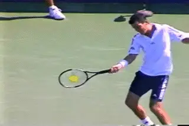
Extension is the forward and upward motion after the contact.
Extension
The first concept we need to understand is Extension. [By extension I mean the movement of the hand and racket forward and upward towards the opponent or opposite side of the court. The point of maximum extension is the last point in which the racket is traveling either outward or upward away from the player. This is before the racket starts to move backward, and/or downward.]
[After the forward extension, the racket starts to move backward and/or downward, what is usually called the "wrap." The relationship between the extension and the wrap has been a source of controversy in coaching, and something I've written about in detail previously.] (To check out my article the Myth of the Wrap, link.)
Like the forward swing, the wrap can follow a number of different paths. It can be primarily upward and backward over the shoulder. It can also move in a more sideways direction, with the hand wrapping around the body at shoulder level. Or it can be lower still, with the hand wrapping around the midsection, or sometimes even lower.
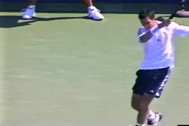
The wrap is the movement backwards or sideways and down after the extension.
[The function of the wrap is to finish the deceleration of the swing.] At the completion of the wrap, the racket is traveling at the slowest speed of any part on the motion. Yet much "modern" coaching focuses on teaching players to mechanically create this position. "Show me the butt of the racket." The problem is that this advice tends to disrupt the natural pattern of racket acceleration and alter the shape of the swing. In effect, coaches are asking players to purposefully swing in the opposite direction they are trying to hit the ball.
The wrap definitely happens in high level forehands and is an integral part of the overall motion. But I believe that it's a consequence rather than a cause of racket acceleration.
You can usually spot players who have been taught to mechanically wrap. Rather than extending all the way outward and upward the appropriate amount on a given ball, they tend to pull up too soon. They can sometimes hit with heavy spin, but they often lack velocity and depth because the swing pattern is too short and steep. Sometimes you actually see them hit themselves in the chest with the racket hand.
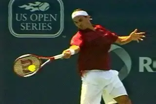
Wrist at eye level, hand at the left edge of torso. with good spacing.
After looking at video of top players for a few years, I feel quite certain that the pace and depth of shot on most forehands is directly related to the extension, the direction and length of the swing, not the wrap. We will see below how player's often shorten the extension when they are rotating the hand and racket, but again this is something that has to be understood as a variation in context of a specific shot.
Pro players typically extend the most when they are driving the ball deep and/or going for winners. You see this in the center of the court and often on inside out and inside in forehands, but depending on the ball and the shot intention, you can see great extension from virtually anywhere in the court.
Checkpoints
There is a characteristic position that skilled players reach at the point of greatest extension. This is with the wrist at around eye level and the racket hand in line with the opposite shoulder. The hitting arm is usually slightly flexed at the elbow. The other key checkpoint is the spacing between the hand the torso. The distance between the racket hand and the torso is usually 18 inches to 2 feet, depending on the length of the players arms, and also the height of the contact and the exact nature of the shot.
These checkpoints are general and vary from player to player and ball to ball, but you see top players approximate them time and time again.
Some coaches associate this with "old style" eastern forehands--and by this attempt to give it a negative connotation. It's similar to how Robert Lansdorp has trained his players, and still very much a part of how he teaches the forehand (link.)
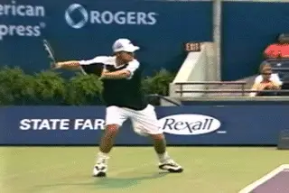
Top players can extend with minimal rotation.
And it's true that it is easier to recognize extension in players who have more moderate grips, for example, Pete Sampras or Tim Henman, or even Andre Agassi. This is because these players in general use less hand and arm rotation, or windshield wiper action, so the extension component tends to be more predominant--and also more apparent--in the followthrough.
Even in high profile modern players, players such as Andy Roddick, David Nalbandian, and Roger Federer for example, the finish can at times be relatively simple[. On certain balls, all three players come through with the racket on edge or nearly on edge, something that is allegedly an artifact of the "antiquated" classical style.]
Take a look at the animations. The forehands of these three players may appear very different to the naked eye, but compare the checkpoints at the extension of the forward swing: wrist at eye level, racket hand even with the opposite shoulder, and tremendous spacing between the torso and the hand and racket.
But extension is a critical component of every good forehand, regardless of grip style or the amount of hand and arm rotation. This is true on the pro tour and at every other level. It's just hard to recognize and understand for certain players and certain balls--until you know how to look for it. Once you know how, you'll recognize extension in the forehands of players with grips and motions that are very different in many respects.
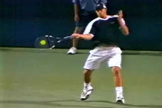
The extreme wiper: the hand and racket turning over from the shoulder in a 180 degree arc.
So why is it so hard to see the nature of the extension in the forehands of certain players? This brings us to the second major component of the followthrough, hand and arm rotation. The fact is most modern forehands, even for players with more moderate grips, now combine extension with a greater or lesser amount of hand and arm rotation. Because this windshield wiper effect is so obvious and dramatic, the extension component is sometimes overlooked and deemphasized. But this a major mistake.
Hand and Arm Rotation
If we look at the second animation of Roddick, we something quite different than the one above. It's a great example of how extreme hand and arm rotation really works.
What is it? The windshield wiper effect is a unitary rotation of the hitting arm and racket from the shoulder joint. Sometimes there can be some additional bending of the elbow, and if the wrist is relaxed, as it should be, then it may also release forward to some degree. But primarily, it's turning the hand, arm and racket over as a unit. (I've written about this factor in the past as well and you can check that article out, link.)
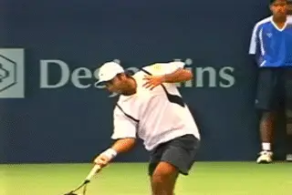
Hand and arm rotation create additional spin.
This Roddick animation shows the full wiper, with a minimum of amount of extension. Watch how Andy's racket tip turns over 180 degrees in the course of the forward swing. Basically the racket tip goes from pointing from the right sideline to the left side line. As it moves, it traces the arc of a half circle.
Note how on this ball, the extension factor is at an absolute minimum. The racket ends up finishing much lower. The spacing between the hand and the body is much less. So this is defintiely a case with great rotation and little extension. But is it the true "modern" forehand? Or is it the Roddick animation above showing much less rotation and much greater extension?
Right! The answer is that it's not an either/or question. Both examples are modern forehands. They just combine the elements of extension and rotation in different ways.
[Why do the players use this ultra wiper? How does it function? It's used to generate additional spin. We think of topspin coming from the "brushing" of the racket face up the backside of the ball. This type of increased wiper action increases this effect.]
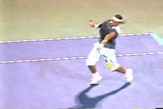
With more extreme grips, the wiper rotation is critical to move the racket through the hit.
We believe that by brushing the ball players produce "pure" topspin. But this probably isn't really true in most cases. Usually there is a degree of side spin as well, because the forward swing is not only upward, it is on a curve from the player's right to left.
Although we need more studies to determine the exact balance of topspin and sidespin in all the variations of the forehand, it appears clear that the wiper action increases the overall amount spin substantially. The topspin component for sure, and possibly the sidespin component as well. And it's obvious that as the speed of the game has increased, more and more players are using more and more wiper action on more and more balls.
[Players often rotate the hand heavily when they finish shorter and lower. It's true they that when players really extend and finish higher they sometimes rotate less. But rotation and extension are not mutually exclusive. In fact the opposite. In reality, players mix extension and rotation together in a blinding myriad of combinations.]
Players may extend less and rotate more. They may extend more and rotate less. And they also routinely combine great extension and great rotation. The more extreme the grip, the more this combination is likely to be the norm. With a grip as extreme as Nadal's, for example, it's difficult if not impossible to hit through the ball without a significant wiper movement. In all our footage, including hundreds of Nadal forehands, I haven't found an example where his racket is truly on edge.
A synthesis of maximum extension and heavy hand and arm rotation.
But what about at the other end of the grip spectrum? That brings us to Roger Federer. As we've noted in the articles on his forehand, he is the most striking example in modern tennis of how these factors can be combined. (link) Look at the animation of the inside in winner. You'll see him maximize both elements, hitting with full extension AND maximum rotation.
And yes, Federer will also break the swing off much shorter with the same kind of heavy rotation in the Roddick wiper example. That's the point. Roger does it all. Among all the players he has the most variety of shot because of his incredible ability to mix these two factors.
The way he mixes them, however, has caused many knowledgeable people to misunderstand his forehand. It's also lead to confusion about something as basic as his grip. Even the great John McEnroe has called his grip "semi-western" and compared it to Andy Roddick's.
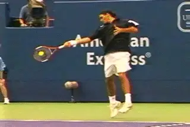
The finish around the torso, but not in the pocket.
In reality, as we saw in the grips articles, Federer has one of the least extreme grips in pro tennis, what we've called a 3 1/2 / 3.
Federer's grip is only slightly more underneath than the grip used by Sampras or Henman. It's more conservative than Andre Agassi, or David Nalbandian. Compared to Roddick, who uses a 4 / 4 1/2, it's virtually classical.
It's generally accepted that Federer has the best forehand in tennis, but the real genius of ths shot is Federer's synthesis of classical and extreme elements. Although you can find players like Sampras or Henman using extreme hand and arm rotation on occasion, Federer has integrated it seamlessly into his forehand in new and unexpected ways.
This synthesis is what leads to misunderstanding about this magical stroke. Television commentators like my friend Cliff Drysdale constantly refer to Federer's "in the pocket" finish. What they are trying to describe is the finish lower and across the body. This is when Roger typically uses heavy hand and arm rotation and less extension. Instead of "wrapping" over his shoulder, in the deceleration phase Roger continues this motion downward and then around the side of the torso.
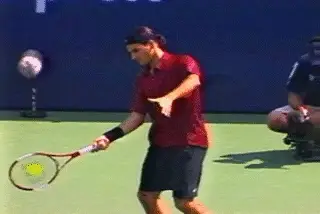
The finish around the torso, but not in the pocket.
But, again, this isn't "the" modern forehand. It isn't even Federer's basic forehand. And calling the finish "in the pocket' is an overstatement, to say the least. I've yet to film one Federer forehand where he gets all the way to his left pocket.
You can see that, definitely, he will rotate the hand over dramatically and finish lower and further across his body, but often times there is substantial extension, even on these lower finishes. Other times, he'll finish much higher but with heavy hand and arm rotation and less extension that on the lower balls.
And that's the point. As we saw in our detailed analysis of Roger's forehand, there are probably at least 25 different combinations of extension and rotation in the footage we've accrued, that now number hundreds of his forehands.
All these forehands are dynamic mixtures of the two basic elements we've been discussing. So where does that leave the average player? If Roger has 25 forehands, do you need 25 forehands as well? What should you develop first? Is there a sequence for developing the right amount of variety for your game?
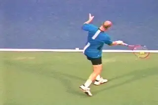
The basic forehand followthrough: extension with minimal rotation.
The answer is definitely yes. Most players should develop the extended finish with minimal rotation first and add the wiper effect as needed as their game progresses. It may seem less exciting and exotic, but the more basic swings that tend to maximize the extension factor are most effective for the vast majority of balls hit at the recreational level, and even in NTRP tennis to around the 5.0 level.
Why? Remember, the point of the wiper action is to generate more spin. But spin is not a goal in and of itself. Spin is used to create control. The more velocity, the more need for spin, and vice versa.
I've seen hundreds of lower level players who seem obsessed with spin and heavy wiper finishes, when it isn't necessary or even effective for the majority of balls they actually hit. (For more on this and how it relates to other critical factors like grip, contact height and stance, link to see the Osmosis Forehand article.)
I think players need to pick a grip style that is appropriate to their level and style of play, and then develop a moderate topspin drive first with great extension. They should learn to hit with consistency, accuracy, and depth. You can model elements from all the pros to help create this. But in terms of the finish, you'll see the racket more vertical (or on edge) more often with players like Henman or even Agassi.
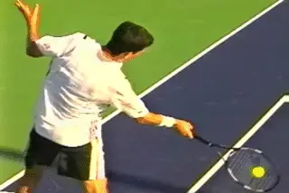
Every player needs the wiper in certain situations.
This is a forehand that reaches the extension checkpoints we discussed above: wrist at eye level, hand at the opposite shoulder, good spacing between the racket and the torso.
[Do you need to learn to wiper as well? Yes, definitely. It applies on many balls that all players face at least at times. It's critical for hitting spin on lower balls, for carving short angles, hitting passing shots, and for dealing with fast, heavy, high bouncing drives--if you actually have to deal those kinds of balls in your matches.]
We'll look at this in more detail in the next article, when we actually correlate what great players do when they hit certain shots and placements. Specifically, we'll look at Roger Federer's forehand and the variety of shots he hits in matches--and we'll see how shot selection relates to his incredible ability to combine extension and rotation.
Stay Tuned.

John Yandell is widely acknowledged as one of the leading videographers and students of the modern game of professional tennis. His high speed filming for Advanced Tennis and TPA have provided new visual resources that have changed the way the game is studied and understood by both players and coaches. He has done personal video analysis for hundreds of high level competitive players, including Justine Henin-Hardenne, Taylor Dent and John McEnroe, among others.
In addition to his role as Editor of TPA he is the author of the critically acclaimed book Visual Tennis. The John Yandell Tennis School is located in San Francisco, California.